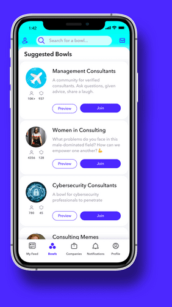

Fishbowl 藏得真深——五个被绝大多数人忽略的冷门玩法
注册完只知道刷 Feed？Fishbowl 里从匿名分层到 Live Events 互动链、从 Bowl 生态到账号安全，藏着一堆官方都不宣传的隐藏功能
你以为 Fishbowl 就是个"半匿名的职业脉脉"？刷一刷 Feed、在 Bowl 里吐槽老板，然后就没了？去它的官网翻一翻就知道——我前几天把设置菜单从顶翻到底，还啃了一遍fishbowl文档的 FAQ，发现这货藏得比想象中深多了。那些新手引导里没提、官方博客也没宣传的冷门操作，才是它真正好用的地方。要体验这些功能，先去下载装一份再说。
隐藏功能一：匿名等级不是全局开关，是"发帖时冻结"的
绝大多数人注册完 Fishbowl 就再也没碰过匿名设置——要么默认啥样就啥样，要么嫌麻烦懒得调。但这里有个容易被忽略的细节：你现在改匿名等级，只影响你之后发的帖子。
之前发的内容，不管当时是完全实名还是公司级匿名，全部保持原状态不动。我第一次看到这条的时候愣了一下——这意味着什么？意味着你职业生涯早期犯傻发的那些"跪求 offer"的帖子，就算你现在升级成了 Industry Bowl 的资深成员，它们还是裸奔着你的真实身份挂在那里。
更有意思的是，Fishbowl 把匿名分成了好几个层级：完全实名、公司级匿名、行业级匿名、完全匿名。每一层控制的是"谁能看到你的公司名"，而不是笼统的"匿名/不匿名"。比如公司级匿名只隐藏公司名，同行业的人还是能看到你是谁；完全匿名则连头像和职业标签都给你换掉。
这个分层机制藏在设置页的隐私选项里，新手引导根本不会主动告诉你。我身边好几个朋友用了半年才发现，原来自己一直在裸奔发帖——不是 Fishbowl 没给你隐私保护，是它藏得太鸡贼了。
隐藏功能二：Bowl 不是单一群组，是三层生态
刚注册完 Fishbowl 的时候，我以为 Bowl 就是"兴趣群组"——跟豆瓣小组、微信群一个性质。后来才发现，Fishbowl 把 Bowl 分成了三种完全不同的东西，而且它们之间是嵌套关系：
Industry Bowl 是自动匹配的，你填了什么行业就进什么行业 Bowl。这是你的"主战场"——同行业的人、同领域的讨论、同层级的困惑都在这里。咨询行业的 Bowl 聊的是 MBB 跳槽和项目复盘，科技行业的 Bowl 聊的是 FAANG 和初创公司融资，氛围天差地别。
Company Bowl 是公司专属的内部社区，只有你填了公司名并且通过验证才能进。这里是最有价值的信息来源——隔壁组在裁员、新福利政策刚出台、某个高管要离职，这些信息在公开渠道根本找不到。但它也是最需要谨慎发帖的地方——半匿名不等于没人猜得出你是谁。
Community Bowl 是自由加入的兴趣群组，比如 Women in Tech、LGBTQ+ Professionals、Career Advice 这种跨行业的话题群。它们不像 Industry 和 Company Bowl 那样有身份门槛，任何验证用户都能加，氛围也更轻松。
大多数新手只进了 Industry Bowl 就停了，完全没意识到 Company Bowl 才是金矿。我建议你打开 Bowls 标签页，搜一下你公司的英文名——大概率是已经存在的，只是你没主动加入。
隐藏功能三：Live Events 不是"听讲座"，是完整的互动链
我之前把 Live Events 当成"线上 webinar"——进房间、听主讲人讲完、走人。直到上周参加了一场关于 AI 产品经理的活动，才发现这套东西比 webinar 好玩多了。
先说举手机制。听众默认是静音的，想发言得点底部的 Hand Raise。主持人看到你的举手后会把你"拉上台"（Grant Speaker），上台自动解除静音，说完后点 Hand Down 回到听众模式。整个流程设计得很轻——没有传统 webinar 里那种"主持人审批后开麦"的沉重感，举手下台是你自己控制的。
然后是文字聊天区。不敢举手的人可以在聊天区打字提问，而且很多讲者会专门盯着聊天区来决定接下来分享什么。我上次举手没排上，但在聊天区提了一个小问题，主讲人直接点名回答了——这在传统 webinar 里几乎不可能。
还有个藏得更深的功能：给讲者发私信。如果讲者开启了私信开关，你可以在活动中或者活动后直接发消息联系。我知道好几个朋友通过这个功能拿到了内推机会——活动中互动过、讲者对你有印象，私信开口比冷邮箱成功率高多了。
隐藏功能四：Feed 的内容来源是可以"自定义权重"的
Feed 不是一个被动的时间线——它汇集了你加入的 Bowls、你 Networking 关注的人、以及平台算法推荐的内容。但这里有个很多人不知道的点：你加入 Bowl 的顺序和数量，直接决定了算法给你推什么。
如果你只加了一个咨询行业 Bowl 和一个 Career Advice Bowl，Feed 里就永远是这两个类别的内容。但如果你再加一个 Tech Bowl 和一个 Startup Founders Bowl，Feed 的多样性立刻上来。这不是什么高深的算法调优——就是 Fishbowl 的底层设计：它不会给你推你没加入的领域，除非那篇帖子特别火。
还有个冷知识：Networking Mode 关闭时，别人不能直接私信你。这个开关在设置里藏得很深，很多人甚至不知道它的存在。关掉它，陌生人的骚扰消息直接清零；想拓展人脉的时候再打开。我自己的习惯是工作日关、周末开——毕竟没人希望周一早上收到猎头的私信轰炸。
隐藏功能五：账号注销不是"彻底消失"，有 30 天缓冲期
这一条是我在 FAQ 里翻到的，看完之后立刻去检查了一下自己的账号设置。
Fishbowl 的注销机制设计得很特别：注销后你的帖子不会被删除，而是变成"Deactivated User"——匿名身份保留，内容留在原来的 Bowl 里。官方的说法是"为了社区内容完整性"，说白了就是不想让你删了自己的帖子导致讨论串断裂。
更重要的是，注销申请不是立刻生效的——平台会在 30 天内完成数据清理。这 30 天里你如果反悔，还可以重新登录激活账号。但注销前一定要做一件事：手动删除你不想保留的帖子。注销后你就失去了编辑和删除权限，那些年轻时犯傻发的帖子，会一直以 Deactivated User 的身份挂在社区里。
还有个安全相关的小细节：Fishbowl 支持多设备登录，但如果检测到不同地区的异常登录，会触发身份验证。你可以在设置里的 Security 板块查看 Active Sessions，定期检查一下有没有陌生设备。我自己每两周查一次——毕竟半匿名社区里，账号安全比实名社交平台更重要。
别踩的坑
聊了这么多隐藏功能，说几个我踩过的坑：
匿名设置改了不回头改旧帖——这个已经说过了，发帖子之前先想清楚用什么等级，事后再改没用。修改职业信息（比如跳槽了换公司名）会触发人工审核，不要频繁改——我一个朋友三个月改了两次职位，直接被平台临时锁定了账号，等了三天才解封。
还有，Company Bowl 里发帖要格外小心。虽然是半匿名，但公司内部的人根据讨论的项目、时间、具体细节，很容易猜到你是谁。我见过好几个在 Company Bowl 吐槽老板的人，帖子被转发到外部后被 HR 找上门——半匿名不是完全隐身，发帖前过一遍脑子。

最后
Fishbowl 的好玩之处不在于它有多少功能，而在于它把很多功能藏在了"不显眼但也不保密"的位置——匿名分层、Bowl 三层生态、Live Events 互动链、Feed 权重自定义、账号缓冲期，这些东西在新手引导里一个都没提，但全是提升体验的关键。
把它用透吧。半匿名社区里，你的边界感决定了你能拿到多少价值——知道哪些地方该裸奔、哪些地方该戴面具，才算真的入门。我也会继续把这些社区工具翻个底朝天，有新发现再跟你聊。这套 Fishbowl 的完整资料包同时维护在 GitHub、Gitee 和 GitCode，国内访问走后两个更顺畅。